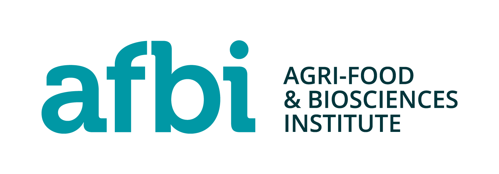
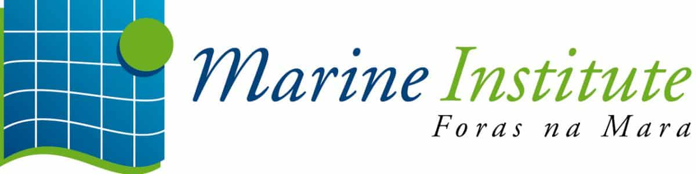
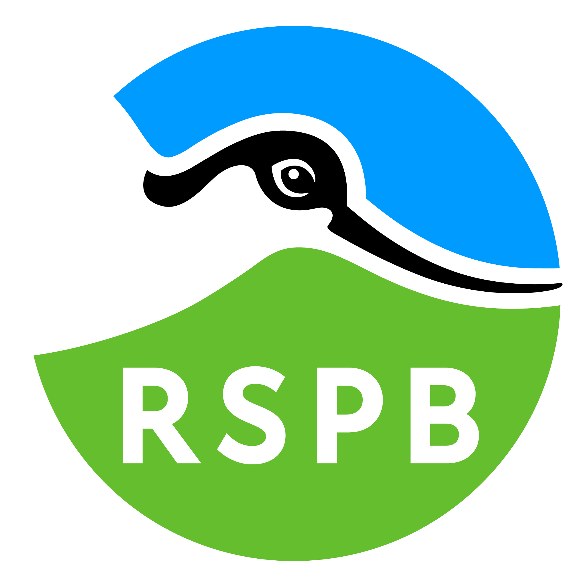
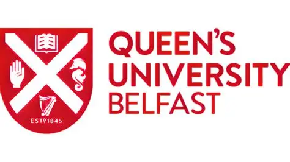
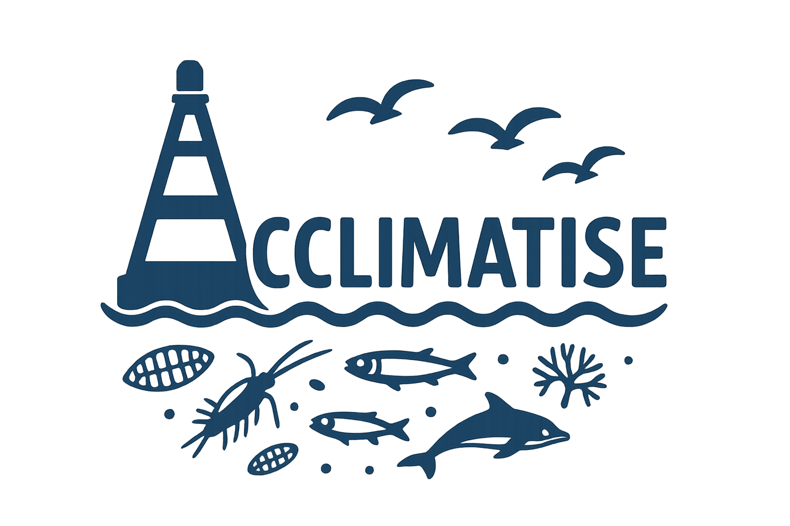
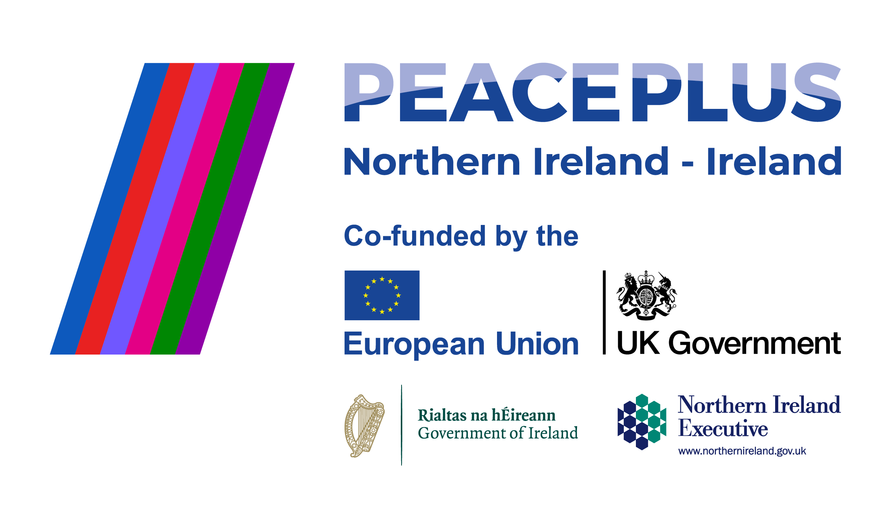

A Changing Climate Impact Monitoring and Assessment Toolbox for Irish Seas (ACCLIMATISE) is a cross-border marine research and management project supported by PEACEPLUS, a programme managed by the Special EU Programmes Body (SEUPB), that aims to help address increasing pressures on the coastal seas of Ireland and the United Kingdom.
Demand for marine space is expected to grow due to the expansion of offshore renewable energy, aquaculture, fishing and maritime transport, while commitments to protect 30% of marine waters through Marine Protected Areas will reduce the space available for these activities. Climate change further increases these challenges, with sea temperatures in the Irish Sea rising by almost 1°C between 2013 and 2023.
The project will develop an evidence base and advanced decision-support tools to help marine planners balance environmental protection with economic development. Its primary focus is on the fishing, conservation and offshore renewable energy sectors, using the Western Irish Sea and Malin Sea as case study areas.
A key objective of ACCLIMATISE is to fill critical knowledge gaps relating to:
![Conceptual representation of marine ecosystem interactions including climate change,
oceanographic processes, nutrient inputs, biodiversity and human activities
such as fishing, offshore renewable energy development and maritime transport.
ACCLIMATISE aims to improve understanding of these pressures and their
cumulative effects across Irish marine ecosystems.
</p>
</div>
<p>
Using innovative monitoring methods and ecosystem modelling, ACCLIMATISE
will integrate new and existing scientific knowledge into a state-of-the-art
ecosystem-based management toolbox.
</p>
<p>
This will enable stakeholders to visualise the impacts of different
development scenarios and assess trade-offs between competing priorities,
including food production, renewable energy generation, biodiversity
conservation, carbon storage and tourism.
</p>
</section>
<section id=](Ecosystem Infographic.png)
The scientific work of ACCLIMATISE has been arranged into four distinct Work Packages designed to provide the key data, evidence and decision-support tools needed to support sustainable future activities in Irish seas.
ACCLIMATISE will develop an all-island monitoring network for phytoplankton and zooplankton to improve understanding of climate change impacts on marine ecosystems.
Activities include harmonising monitoring approaches across jurisdictions, mapping key oceanographic features and plankton habitats, testing innovative monitoring technologies, integrating long-term datasets, and involving fishers in data collection through a cross-border fisheries research fleet.
Key Outcome: Improved understanding of climate-driven changes at the base of the marine food web.
ACCLIMATISE will enhance monitoring and management of seabirds, dolphins, whales and their habitats across the Irish and Malin Seas.
The project will use new technologies, citizen science and cross-border collaboration to identify important habitats, monitor priority species, assess threats such as bycatch and entanglement, and develop conservation action plans.
Key Outcome: Better evidence and management tools to support the conservation of vulnerable marine wildlife.
ACCLIMATISE will develop a dynamic marine food-web model for the Irish Sea that improves understanding of ecosystem interactions and enables assessment of the environmental impacts of management and development decisions.
Key Outcome: A scientific framework for ecosystem-based marine management.
ACCLIMATISE will establish a robust data governance and quality assurance framework to ensure project data are managed, documented, shared and archived according to international standards and FAIR principles.
Key Outcome: A cross-border marine data management system that ensures ACCLIMATISE datasets remain accessible, interoperable and reusable beyond the project lifetime.
ACCLIMATISE builds on existing collaborations between leading research and conservation organisations across Ireland, Northern Ireland and Scotland. Together, the seven project partners bring expertise in marine science, conservation, ecosystem modelling, climate monitoring, seabird research and marine mammal conservation.
Their combined knowledge will help ACCLIMATISE develop the evidence, tools and strategies needed to support sustainable management of Ireland's seas and reduce potential conflicts between conservation, fishing and offshore renewable energy interests.

ACCLIMATISE project partners at the project launch event.
AFBI will lead and coordinate the ACCLIMATISE project, managing its overall delivery and administration. The institute contributes expertise in oceanography, fisheries science, ecosystem modelling and marine mammal research. AFBI will also lead development of ecosystem models and support establishment of a climate monitoring network around Ireland.
The Marine Institute is Ireland's national agency for marine research and advice. It will help develop the project's climate and ocean monitoring network, provide environmental data, and lead management of research data to ensure information remains accessible and usable by all project partners.
SAMS brings specialist expertise in plankton monitoring and marine mammals. The organisation will help improve understanding of climate change impacts on marine ecosystems and support research on whales, dolphins and porpoises.
RSPB NI is one of Europe's largest wildlife conservation organisations. Within ACCLIMATISE it will focus on understanding and reducing threats to seabirds arising from fishing and marine development activities, helping to improve seabird conservation across the region.
BTO is a leading bird research organisation and will lead the project's seabird research programme. The organisation will work with partners across Ireland and Northern Ireland to improve understanding of bird populations, movements and habitat use.
Queen's University Belfast provides expertise in advanced genetic techniques used to study marine ecosystems. The university will help improve understanding of plankton distributions and seabird diets while sharing specialist knowledge and skills with project partners.
The IWDG is an all-island conservation organisation dedicated to whales, dolphins and porpoises. Using its extensive sightings and monitoring records, it will help improve understanding of marine mammal movements and interactions across Irish waters, supporting evidence- based conservation planning.
ACCLIMATISE aims to provide the scientific evidence, partnerships and ecosystem-based decision-support tools needed to support sustainable, climate-resilient management of marine resources while reducing conflict between conservation, fishing and renewable energy interests across Ireland and Northern Ireland.
Specifically, ACCLIMATISE is expected to deliver 12 Joint Strategies and Action Plans and 5 Pilot Actions that support cross-border marine management, conservation and climate resilience.
12 Joint Strategies and Action Plans
5 Pilot Actions
These outputs will provide practical guidance for policymakers, researchers and marine stakeholders:
Target Outcome: Ten of these strategies and action plans are expected to be formally adopted and used by organisations involved in marine management.
ACCLIMATISE will test and demonstrate innovative approaches to marine monitoring, research and stakeholder engagement:
Trial advanced monitoring methods, including imaging technology and environmental DNA (eDNA), in Irish waters.
Engage fishing vessels in scientific data collection and environmental monitoring.
Develop activities that increase public understanding and awareness of marine environmental challenges.
Test new methods of tracking marine mammals and seabirds through underwater and coastal acoustic monitoring.
Use vessels and other existing platforms to improve monitoring of seabirds and marine mammals across borders.
Target Outcome: All five pilot actions are expected to be taken up, expanded or incorporated into future programmes and organisational practices.
Through these strategies, action plans and pilot projects, ACCLIMATISE aims to create practical, long-lasting solutions that improve marine monitoring, support biodiversity conservation, enhance climate resilience and provide better evidence for decision-making across Ireland and Northern Ireland.
For further information about the ACCLIMATISE project, please contact:
The AFBI Corporate Communications Team
Email:
corporate.comms@afbini.gov.uk